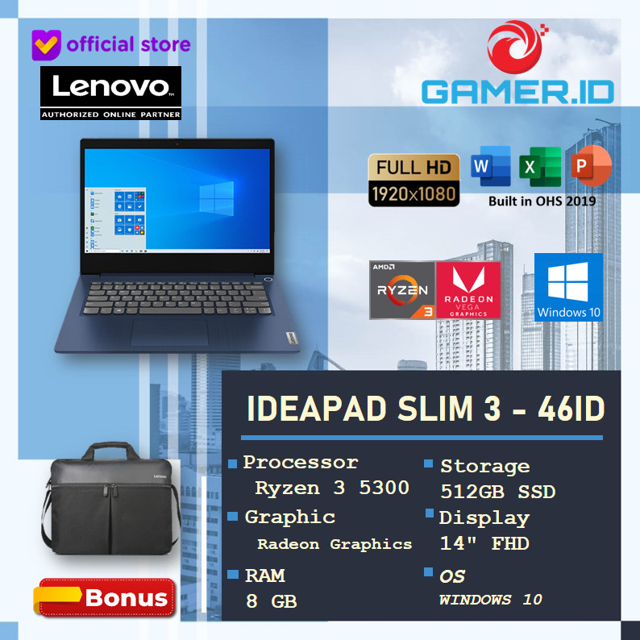

Laptop Terbaik Untuk Programmer
Spesifikasi
Processor : AMD Ryzen 3 5300U (4C / 8T, 2.6 / 3.8GHz, 2MB L2 / 4MB L3)Graphics : Integrated AMD Radeon Graphics
Memory : 8GB Soldered DDR4-3200
Storage : 512GB SSD M.2 2242 PCIe NVMe 3.0x4
Display : 14" FHD (1920x1080) TN 250nits Anti-glare, 45% NTSC
Keyboard : Backlit, English
Battery : Integrated 38Wh
Power Adapter :65W Round Tip
Operating System : Windows 10 Home 64, English
Bundled Software :Office Home and Student 2019
Dimensions (WxDxH): 324.2 x 215.7 x 19.9 mm (12.76 x 8.49 x 0.78 inches)
Weight: 1.41 kg (3.1 lbs)